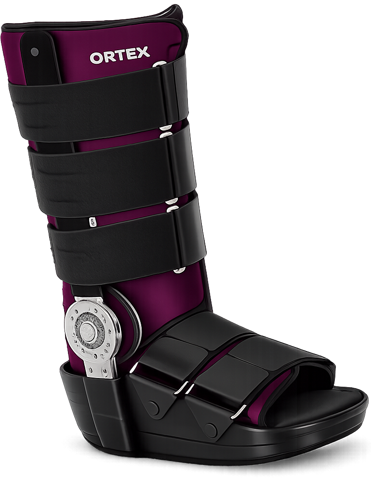
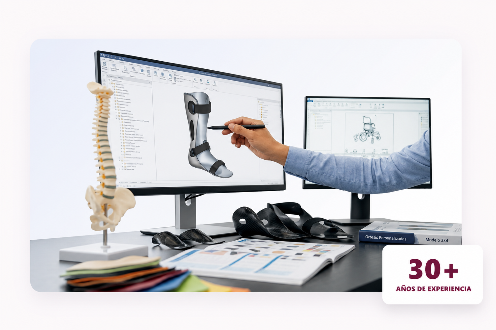

Calidad y seguridad
Productos con declaración de conformidad y altos estándares de calidad.
Catálogo ortopédico
ORTEX Zlín desarrolla y fabrica dispositivos ortopédicos orientados al tratamiento postoperatorio, conservador y a la rehabilitación de articulaciones y ligamentos dañados.

Productos con declaración de conformidad y altos estándares de calidad.
Ortesis fabricadas en serie con tecnología y materiales de última generación.
Asesoramiento especializado en selección, tamaño y uso de productos.
Empresa familiar checa con más de 30 años de experiencia en ortopedia.
Nosotros
Somos fabricantes y distribuidores de ortesis y tutores producidos en masa. ORTEX Zlín es una empresa familiar checa fundada en 1991.
El programa se centra en el desarrollo, la producción en masa y la venta de ortesis para el tratamiento postoperatorio, conservador y la rehabilitación.

Ajuste ergonómico para mayor comodidad.
Duraderos, ligeros y pensados para el uso diario.
Procesamiento preciso y controlado.
Asesoramiento sobre selección y tamaño.